Surface controls · DRUM / SYNTH
Deterministic silent preview · offscreen/software · no physical Pi certification. Provenance
DrumRack · QML 0° DrumRackStates · QML 0°
DrumRackStates · QML 0°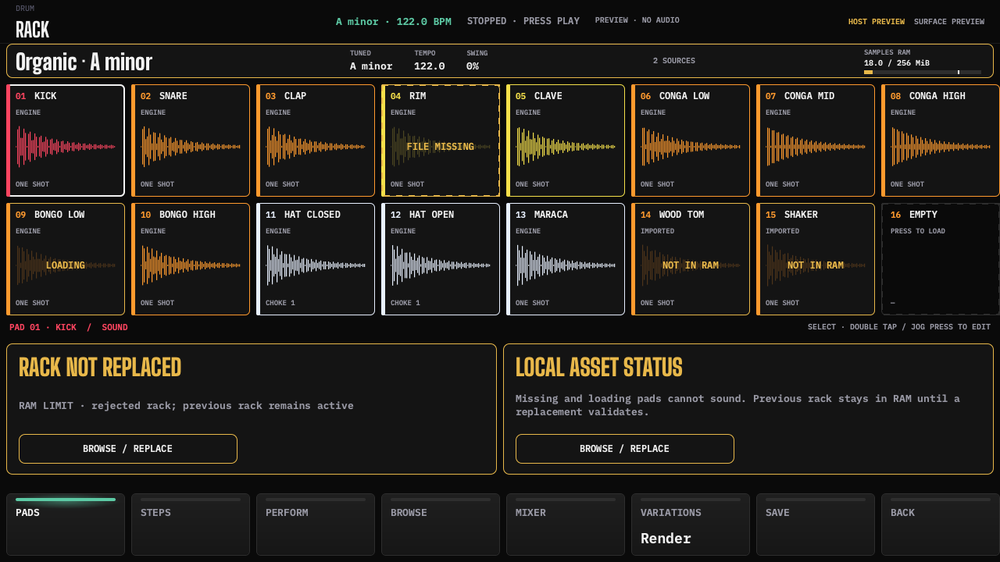
DrumRackEmpty · QML 0° DrumPad · QML 0°
DrumPad · QML 0° DrumBrowser · QML 0°
DrumBrowser · QML 0°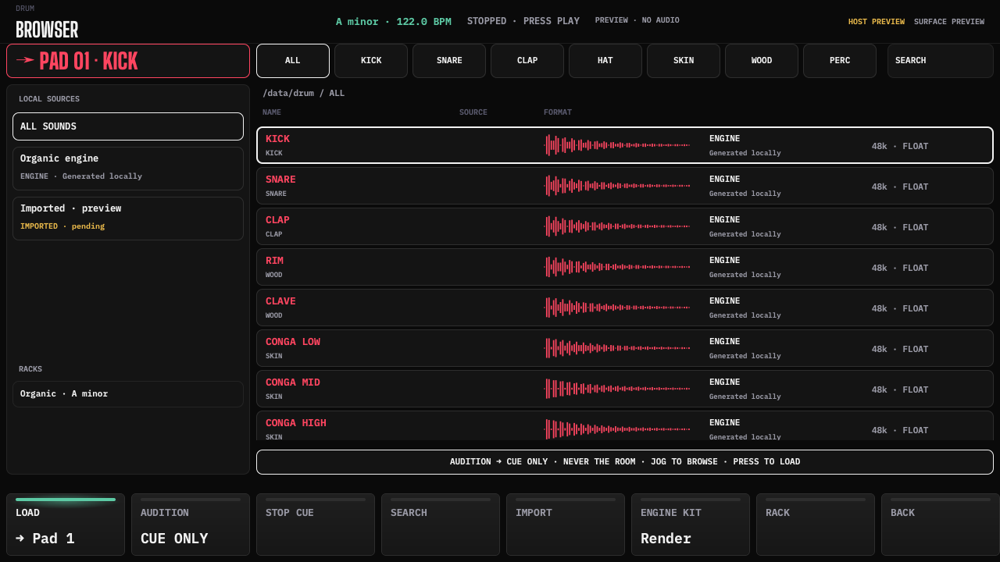
DrumBrowserEmpty · QML 0° DrumImport · QML 0°
DrumImport · QML 0° DrumSteps · QML 0°
DrumSteps · QML 0°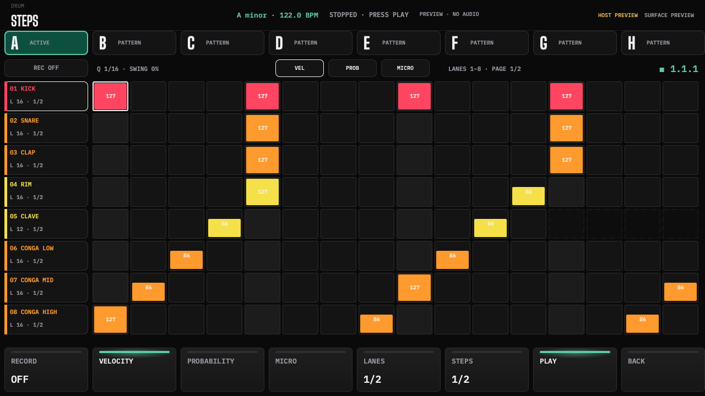
DrumProbability · QML 0° DrumPerform · QML 0°
DrumPerform · QML 0° DrumMixer · QML 0°
DrumMixer · QML 0°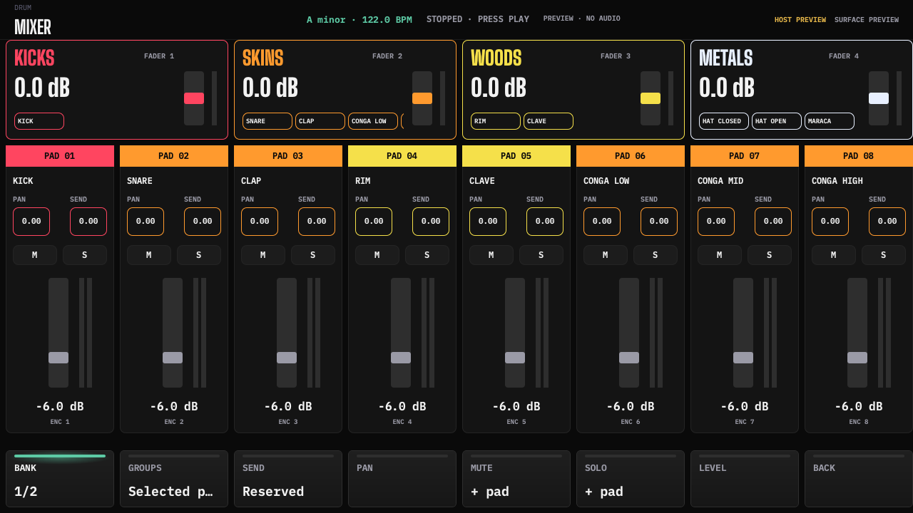
DrumSave · QML 0°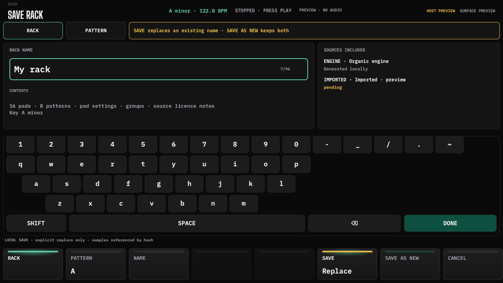
DrumVariations · QML 0°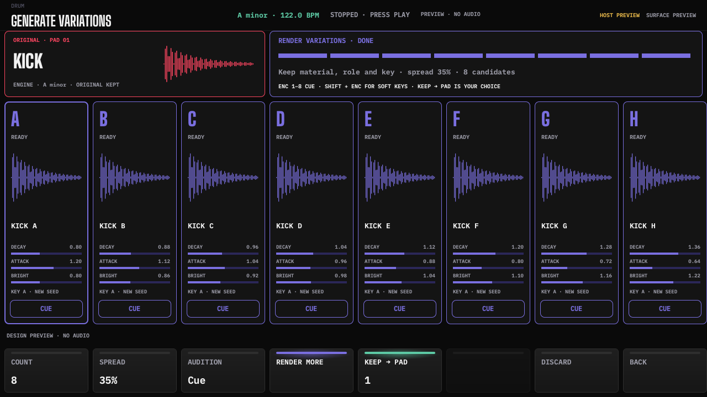
Settings · QML 0°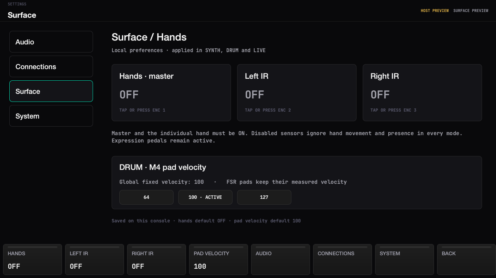
SynthHybrid · QML 0°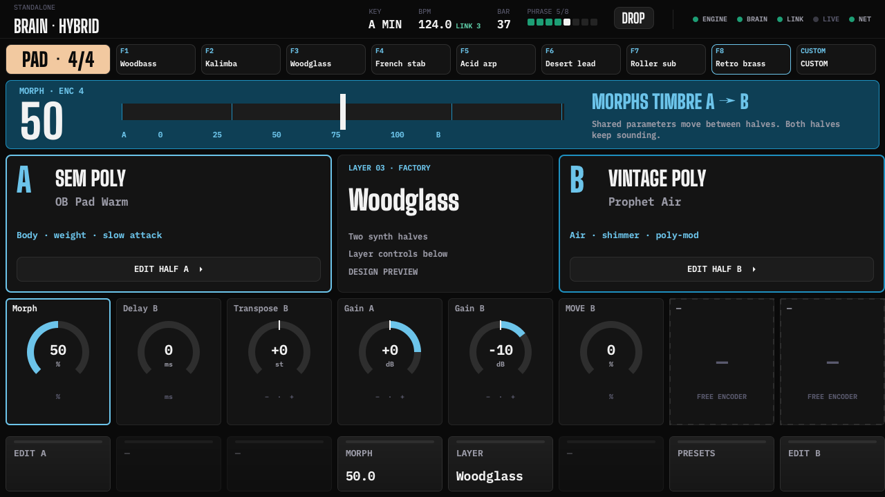
ModeSelect · QML 0°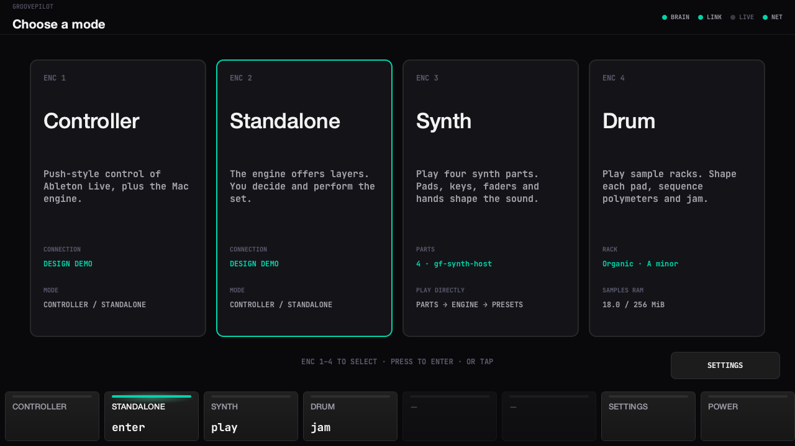
DrumRack · QML 90°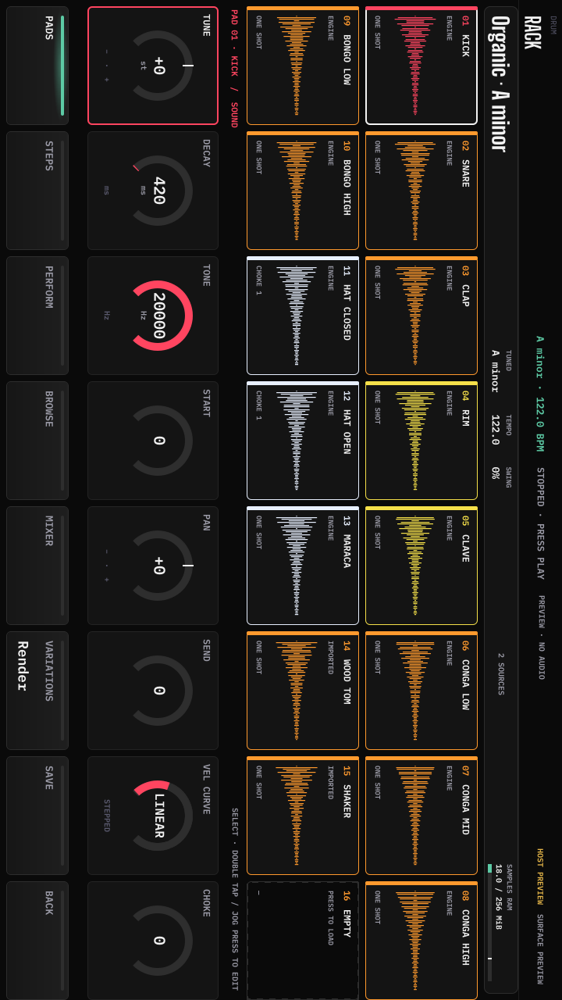
Settings · QML 90°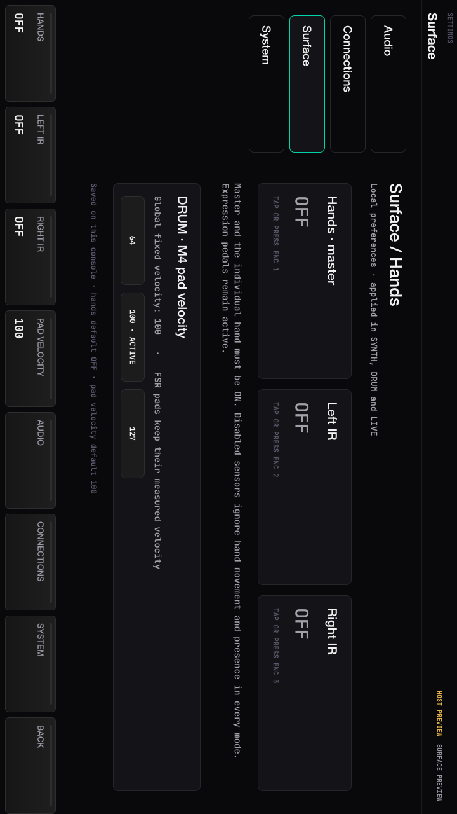